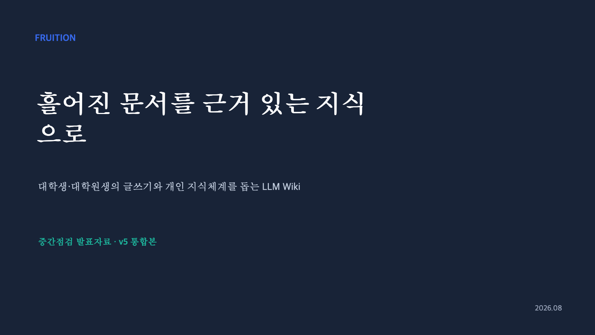

Fruition
업로드한 문서를 LLM이 Wiki로 정리하고, RAG 기반으로 원문 근거를 찾아 답변하거나 자연어로 문서를 편집하는 AI 워크스페이스입니다.
GitHub · local-pilot ↗GitHub · AI 분리 저장소 ↗MSA 초기 설계와 피드백 반영 과정 ↗ABOUT ME
가설을 실험으로 확인하고, 결과가 달라진 원인을 찾아 다음 개선으로 연결합니다.
AI의 정확도와 비용, 처리 시간을 함께 살피며 서비스에 맞는 구현을 선택합니다.
문서를 지식으로 활용하는 AI 워크스페이스 Fruition과, 의약품 정보를 쉽게 전달하는 복약 서비스 Pilltip을 만들었습니다.
SKILLS
Java · Spring Boot · Spring AI · Python
인증·인가 구현 (Spring Security, Oauth 2.0)
개인 쇼핑몰 · 로그인 구현 ↗
Todo 웹 · OAuth 연동 ↗
LangChain · LangGraph · RAG · LLM Evaluation · Jev
Elasticsearch · Weaviate · BGE-M3 · BM25
MySQL · PostgreSQL · Redis · Kafka
Docker · Docker Compose · GitHub Actions
PROJECTS

업로드한 문서를 LLM이 Wiki로 정리하고, RAG 기반으로 원문 근거를 찾아 답변하거나 자연어로 문서를 편집하는 AI 워크스페이스입니다.
GitHub · local-pilot ↗GitHub · AI 분리 저장소 ↗MSA 초기 설계와 피드백 반영 과정 ↗
Rust 기반 HWP/HWPX 프로젝트의 오류 분석, 수정안 제출과 CI 대응. 그림·표·도형의 textFlow 속성이 저장 후 초기화되는 오류를 수정했습니다.
GitHub 저장소 ↗ PR #1213 · 병합 ↗ PR #1351 · 제출 ↗ 크게 보기 ↗
크게 보기 ↗Backend 멘티 및 멘토. 멘티 12명 대상 6회 멘토링과 코드 리뷰. HTTP·Servlet·REST API·DB 기초를 보강하는 커리큘럼 개편에 참여했습니다.
APPTIVE 백엔드 멘토 공로상 · 2026.01.09 ↗ 크게 보기 ↗
크게 보기 ↗부산대학교 대표 전시팀으로 Pilltip 부스를 운영하고 서비스 시연과 기술 질의응답을 진행했습니다.
전시 현장 사진 ↗